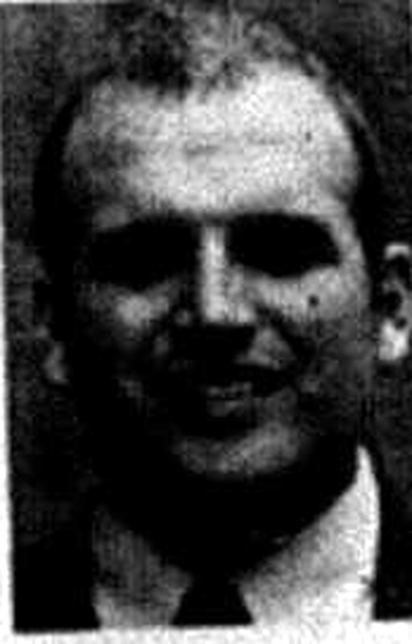

#
More student seats at the games
SGA secretary Jamie Fite wrote to interim president Barbara Burch requesting additional student seating in Diddle Arena and Smith Stadium. The letter survives in the SGA records collection.
Student Government Association · academic year

Outgoing letters from this period cover the Dogwood Drive crosswalk and student seating at athletic events. Confirmed by Herald 72:54 (24 Apr 1997, "Keith Coffman Takes Charge") and the SGA's own 2001 presidents list naming him the 31st president, 1997-98.
Coffman presided over one of the busiest legislative years in the surviving 1990s record. The SGA's own legislation archive for 1997 preserves at least 24 numbered bills and resolutions from his fall semester alone, from the Dogwood Drive crosswalk to the ten-point grade scale, student e-mail addresses in the directory and ice machines in every residence hall.
The SGA's 2001 list of presidents records Keith Coffman of Russellville as the 31st president, serving 1997-98, and marks him as having also served as student regent. His term coincided with Gary Ransdell's first year as university president.
Coffman's presidency opened with the Herald's April 24, 1997 headline 'Keith Coffman Takes Charge,' paired with a story in the same issue in which the new Student Government Association president mapped out his upcoming term.
Sources for this account
Everything the archive holds on Keith Coffman, gathered on one page.
Everyone the record shows in office this year. Each name goes to their own page, with every office they held and everything the archive says they did.
Elected 22 April 1997 and presided over Congress all year. She ran the Weekend in the Woods retreat and reported Provide-A-Ride ridership week by week, telling Congress on 18 November 1997 that 52 people had ridden the previous Thursday night. In April 1998 she announced the presidential debate and the dates of the general election.
SGA Meeting Minutes, 2 Sep 1997Presented a 1997-98 budget of $41,756 for approval in September 1997 and reported in November that expenditures to date were $11,150.68 against a balance of $30,605.32. Elected executive vice president for the following year.
SGA Meeting Minutes, 9 Sep 1997 Herald 73:50, 16 Apr 1998Signed outgoing SGA correspondence to the administration throughout the year, on athletic seating, housing stipends and stalled legislation.
TopSCHOLAR - SGA Documents/Reports/14Convened the committee heads after each meeting, organised a secret santa for Congress in December 1997, and authored Resolution 97-20-F recognising honours graduates, which passed unanimously on 18 November 1997.
SGA Meeting Minutes, 18 Nov 1997Revived SGA's old newsletter The Gavel, set up the monthly SGA and University Center Board calendar in the College Heights Herald, and organised the December 1997 blood drive in West Hall Cellar. She asked every committee to file three goals for the spring.
SGA Meeting Minutes, 18 Nov 1997Sworn in by President Coffman on 9 September 1997 and then swore in all new members of Congress, telling them the Judicial Council would be more involved than in previous years.
SGA Meeting Minutes, 9 Sep 1997Recorded as a guest of Congress with the other Judicial Council members at the meeting of 21 April 1998.
SGA Meeting Minutes, 21 Apr 1998Announced the results of the April 1998 primary election from the floor of Congress: Brad Sweatt 140 votes, Amy France 95, Christoph Miller 72, sending Sweatt and France to the general election for Public Relations Director.
SGA Meeting Minutes, 21 Apr 1998Present as a Judicial Council member on 21 April 1998, after serving as secretary in 1996-97.
SGA Meeting Minutes, 21 Apr 1998Moved on 9 September 1997 that all candidates running unopposed be accepted by acclamation. He stood for president in spring 1998 and lost to Stephanie Cosby.
SGA Meeting Minutes, 9 Sep 1997 Herald 73:52, 28 Apr 1998Took the dead week proposal to Academic Council and authored Resolution 97-15-F on announcing syllabi in the schedule bulletin, passed unanimously on 18 November 1997.
SGA Meeting Minutes, 18 Nov 1997Researched a career and job fair for the University and authored Resolution 97-12-F to extend ten-minute parking spaces to fifteen minutes, which Congress defeated 20-28 on 18 November 1997.
SGA Meeting Minutes, 18 Nov 1997Reported on 18 November 1997 that LRC had reviewed eleven pieces of legislation, voting down Resolution 97-17-F for insufficient research and untabling Resolution 97-10-F.
SGA Meeting Minutes, 18 Nov 1997Chairing LRC by April 1998, having chaired the Constitutional Review subcommittee that drafted the new constitution. She also authored Resolution 98-16-S establishing a student mentor programme, passed unanimously on 21 April 1998.
SGA Meeting Minutes, 21 Apr 1998Chaired the Legislative Research subcommittee set up to prepare a revised constitution for a student vote at the spring 1998 election. She reported on 18 November 1997 that the committee had reworked the draft with the Executive Council.
SGA Meeting Minutes, 9 Sep 1997Set the committee's goals as a more accessible campus for disabled students, finishing the Designated Driver cards and further work on the gazebo project.
SGA Meeting Minutes, 2 Sep 1997Vice-chair in November 1997 and chair by April 1998. He authored Resolutions 98-13-S on on-campus phones in Grise Hall and 98-18-S on maintaining lights on the sidewalk between DUC and Preston, both passed unanimously on 21 April 1998.
SGA Meeting Minutes, 21 Apr 1998Authored Resolution 97-10-F applying housing scholarships to off-campus housing, which was discussed heavily, with voices raised on both sides, and passed 35-15 on 18 November 1997 after she spoke in its favour.
SGA Meeting Minutes, 18 Nov 1997Chaired the Hillraisers, an ad hoc committee created in 1997 to raise student turnout at athletic events, with free membership, t-shirts and prizes at games. The surname is also written Hefler in the 2 September 1997 minutes.
SGA Meeting Minutes, 2 Sep 1997The 7 things student government staged or ran for the campus this year, drawn from the chronology below. Every one of them also appears on the programmes page, which runs the whole sixty years together.
SGA secretary Jamie Fite wrote to interim president Barbara Burch requesting additional student seating in Diddle Arena and Smith Stadium. The letter survives in the SGA records collection.
The Herald of 11 September 1997 reported that Gary Ransdell had been chosen as Western's president, ending the search SGA had followed since February. The Board of Regents, on which the student regent sits, approved his contract on 4 November and he took office the following week.
Herald 73:6, 11 Sep 1997 - Back, "Gary Ransdell Gets Top Job"
Resolution 97-6-F called for reinstatement of the ten-point grade scale, and Resolution 97-5-F addressed charitable organizations and solicitation of funds the same evening. The grading fight would run on for years at WKU.
Bill 97-1-F addressed a Summer Job and Internship Career Fair, the first bill numbered in the fall 1997 legislative archive.
One of a run of outgoing letters in these years covering student seating at athletic events, ice machines in residence halls, campus safety, professors posting office hours, food court hours, housing scholarships for off-campus students and student health services.
Bill 97-2-F, dated 28 October 1997, disbursed $6,200 to a listed set of student organizations. The same sum was budgeted for Organizational Aid again the following autumn, when Bill 98-9-F split it among forty-one groups.
$6,200 disbursed to student organizations
The Herald of 28 October 1997 reported that the Academic Council had amended the no-test proposal, under Charlie Lanter's byline. The dead week campaign had been running since Resolution 96-2-S of 20 February 1996, which asked for a reading week before finals.
Herald 73:18, 28 Oct 1997 - Lanter, "Academic Council Amends No-Test Proposal"
Bill 97-3-F allocated $900 of Campus Improvement funds to print designated driver cards, which entitled the designated driver to free soft drinks in place of alcohol. The bill argued that the scheme could prevent alcohol-related road accidents and recorded that restaurant and community support was already in place. It had its first reading on 4 November 1997 and passed on second reading a week later.
Resolution 97-9-F asked that paper towels be placed in the restrooms of the Downing University Center. It is one of only two pieces of legislation from the year in the digitised SGA collection.
Between November 2 and 18 the legislative archive records at least fifteen numbered resolutions, covering a speed hump for the Regents Avenue lot, fifteen-minute parking spaces, working ID scanners, new sidewalks at Thompson and Grise, ice machines, soap and sanitary restrooms in residence halls, picnic tables, bicycle racks and recognition for honors graduates. It is one of the densest legislative months in the surviving 1990s record.
Bill 97-5-F authorised roughly $2,500 for a 20-by-20-foot tent for homecoming, tailgating and other outdoor events. The authors argued that one-day rentals started around $200 and that SGA could rent the tent cheaply to other student organisations to recover the cost.
about $2,500
The Herald of 13 November 1997 reported that sober drivers were getting free drinks, under Charlie Lanter's byline, nine days after Bill 97-3-F allocated $900 to print designated driver cards offering the driver free soft drinks. The archive holds the issue as a contents listing, so the report's own detail is not established here. The cards were announced for distribution the following February.
Herald 73:23, 13 Nov 1997 - Lanter, "Sober Drivers Get Free Drinks"
Bill 97-4-F addressed buying typewriters for the library. The legislative archive gives the bill's subject and date; whether it passed is not established here.
Resolution 97-23-F requested picnic tables for the campus area near Zacharias Hall, Meredith Hall and Pearce-Ford Tower. Its numbering shows the congress had produced at least 23 fall resolutions by mid-November.
The Herald of 3 February 1998 reported that the Board of Regents had upheld a $5 student fee, in coverage tying the decision to Detrex Field and the Student Government Association. The student regent sat on the board that took the vote.
$5 student fee upheld
Herald 73:32, 3 Feb 1998 - Felkins, "Regents Uphold $5 Student Fee"
The Herald of 17 February 1998 reported that the Student Government Association's designated driver cards would be distributed the following day. The archive holds the issue as a contents listing, which gives nothing about the scheme beyond the headline.
Bill 98-1-S disbursed $1,020 in child care grants to six students in the WKU child care programme. The awards ran from $100 to $240 each and were set by the Child Care Grant Committee.
$1,020 to six students
Jamie Fite wrote to Academic Affairs Vice President Barbara Burch about applying housing stipends to off-campus housing, following up resolutions on the subject passed in both 1997 sessions.
Bill 98-2-S declared 23 April 1998 Faculty Appreciation Day and committed SGA to a catered reception in the faculty's honour. It began an annual event SGA repeated every spring for the rest of the decade.
Bill 98-3-S sponsored a catered Meet Your Dean Reception on 7 April 1998 so students could meet the dean of their college. The authors noted that many students did not know who their dean was.
The Herald ran "Keith Coffman Served Students Well" alongside a People Poll asking students what they thought of his job performance, in the same issue that reported candidates preparing for the spring election.
The spring session's surviving record includes Bill 98-4-S for Neighborhood Watch signs on April 19 and Bill 98-5-S creating an Excellence in Teaching Award on April 21.
As the term closed, secretary Jamie Fite wrote to Provost Barbara Burch requesting action on several pieces of legislation, pressing the administration to answer what the congress had passed.
In election week the Herald polled students on how they would spend $15,000 of SGA's money, ran a column arguing the money for a big electronic message sign could be better used, and printed dueling letters on whether the association served students. Its campaign coverage reported that candidate Stephanie Cosby wanted more scholarships.
The Herald reported 'Stephanie Cosby Rolls to Huge Victory' in the SGA election that closed the year, alongside a story on how taxing election day was for officer candidates. Cosby would lead the association in 1998-99.
Bills and resolutions from this session, held as files on this site.
Every source cited above, once, with the number of entries that rest on it.
Preferred citation
“1997-98,” SGA 60: Student Government at Western Kentucky University, 1966–2026, revised 1 September 2026, y/1997-98.html
Where a name on this page differs from the plaque in the SGA Chambers, the difference is explained above and recorded on the corrections page.